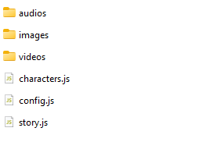

PhoneSim Documentation
Introduction
PhoneSim is a custom engine designed for creating visual novel games that simulate phone interactions. This documentation covers the basic setup and usage of PhoneSim.
In the initial versions the Text Editor (IDE) is not available but you can already use it and create your games. No worry, it will be available soon, but for now I recommend using Notepad++ or Visual Studios Code, or use your favorite editor like Word or even edit directly in the game files. The choice is yours.
Keep in mind that this is an initial version of the documentation and will undergo constant changes. If any part is bad or difficult to understand, let me know and I'll improve it.
Getting Started
When you download the engine you should see some files in the folder. It's crucial that you don't change anything that's in system without contacting me or something might not work properly in your game. On the other hand, everything in “Content” can be changed, but always keep the default so that the engine can always find your files.
When you open the Content folder you will see the following files:
Figure 1: Files in the content folder.
The “audios”, “images” and “videos” folders are media folders and this is where you will insert all the media in your game. from your game.
These folders cannot be deleted, but you can create subfolders without any problems. For example, photos of can be placed in the “images/chars” folder, just point to the image correctly later in the game.
The config file is where you can define certain settings for your game and the characters file is where you can insert or edit a character. Ignore these files for now and let's go to story.js
When you open this file you will see something similar to this:
Figure 2:Contents of the file story.js.
The process is quite simple. Everything you write here will be converted into playability in your game. To test let's make a few changes?
Insert this text into the story.js file, but remember to follow the instructions in the file itself.
## anime
Hi, what's up?
@ Yes I'm fine
Good, what are you doing?
@ I'm learning to create games in the PhoneSim engine
That's great!
Basically, we're creating a conversation with an anime character (full name “Anime Girl”). This character has already was created beforehand to make the tutorial easier. Now just save story.js and open the html file or reload the page if it's already open and that's it. You've already created a dialog easily.
Of course, this is just the beginning, follow all the steps in this guide and if you need further explanation just me on discord.
Multimedia
In the Content folder there are a few folders such as “audios”, “images” and “videos”. These three folders cannot be deleted but you can create new folders within them for better organization.
The engine will always look for the media in the corresponding folder. So remember, if the media you want to display on the screen is an image, it must be in the images folder. The same goes for other types of media.
Remember to point the path correctly. example: test.jpg - This image is directly inside the folder. folderTest/test.jpg - In this example the image is inside images/folderTest/test.jpg.
Characters
In the content folder we have the characters.js file where you can insert, remove or edit a
character. When you
open the file you will see some instructions and a repetition of the following template:
Figure 3:Template for creating a character.
To insert a new character, simply copy and paste this templet and change it according to your preferences, but remember to follow the instructions in the file.
Chat
The chat application is very simple to use. But first you need to indicate the engine you want to create a chat and also point to the character. To do this is very simple and we've already done it in the Getting Started block. To make it easier, I'll use the same example.
## anime
Hi, what's up?
@ Yes I'm fine
Good, what are you doing?
@ I'm learning to create games in the PhoneSim engine
That's great!
By using “## anime” (with two “#”) I'm telling the engine that I want to simulate a chat with the character anime (full name Anime Girl) After that, you just have to type in the commands below:
Simple text messages:
@ text - Message from the MC
text - Message
Multimedia messages:
!image src text - Message with Image [text is optional]
!video src text - Message with Video [text is optional]
@image src text - MC Message with Image [text is optional]
@video src text - MC Message with Video [text is optional
Note: The media must be in their respective folders. Read multimedia to find out more.
Message groups
Unlike a normal chat, in a group entity we have to indicate who is talking, for example:
&Marcus Text
or
&marcus Text
In the example above we have two examples. One with an uppercase letter and the other with a lowercase letter. Let's explanation.
Capital letter When using the first capital letter, the engine will use the name you mentioned,
in this example
Marcus will be shown as the person who sent the message.
This example is good when you want to send a message in a group with a character that doesn't exist in
characters.js.
Lowercase In this case the character must exist in characters.js, the engine will
validate this character and
display the name the player has chosen for it. This example is good for messaging important or
characters in a group or story.
Mentions
Mentions can be used for a character or a character's relationship. See below.
@charKey - Mentions a character
@relKey - Mentions a relation of a character
Examples:
@anime - Will mention anime and the name of the character that the creator and/or player has chosen will be displayed. In this case, Anime Girl will be displayed
@bro - Mentions the relationship, in this case for Anime Girl. The relationship that the Creator/player has chosen for this character will be displayed on the screen.
Posts
To make a post we use the command:!post followed by some information. See below:
!post src charKey **rection** 'person' "comment for person 1"
exemplo:
!post post.jpg anime **What a beautiful photo** 'person 1' "What a nice photo" 'person 2' "@anime You look beautiful" '@mc' "That's my little sister"
To create a new post, I recommend copying and pasting the example above and changing it as necessary.
In src we must enter the path of the image that will be used in the post
In charKey we must inform which character is going to make the post
In **Reaction** this field will contain the MC's reaction to liking the photo in this post.
this field can be left empty:****
Then you can use a sequence of single quotation marks ('') and double quotation marks (“”) for people and people's comments in the post as in the example above.
In the person field (single quotation mark '') and in the comment fields (double quotation mark “”) you can
mention any
character that exists in
characters.js as shown in the example
Dialogues
Dialogues are texts that represent the speech and thoughts of the MC or any other character in the story. functionality is quite simple, everyone will start with an asterisk “*” for speech or two asterisks “**” for thoughts. See below
*Hey, what's up* -> This is a speech by mc
**I'm the MC and I'm thinking** -> MC's thought
*anime-Hey, how are you?* -> You direct the speech to another character by informing them at the beginning
**anime-Thought of the anime character** -> Same goes for thoughts
*sys-System message* -> Using “sys” at the beginning of a speech or thought will be considered a system message.
Call Events
These events are phone calls that the MC can make to any other character. To trigger this event is similar to the way we start a chat, but we just use a “#”. See the example below:
# anime
!answer
*anime-Hello??*
*Hey @anime, just wanted to say hi*
*anime-All right, bye bye*
*Bye*
!endCall
In the example above, we triggered a call event for the anime character.
The !answer command is optional and will tell you whether or not the character (in this case anime)
will answer the call.
Unlike chat where we use messages, on the phone every conversation must be in the form of a dialog
The command !endCall is also optional and should only be used if the !answer command is
used. It is used to hang up the call if it has been answered.
Paths and Choices
Let's look at an example of paths and choices and then a brief explanation
## anime
And then, do you want to go to the movies or to the restaurant?
!choice 'Go to the cinema' "cinemaPath" 'Go to the restaurant' "restaurantPath"
### cinemaPath
@ Let's go to the movies today, we'll leave the restaurant for another day
All right then
!jump continuation
### restaurantPath
@ We're going to the restaurant today, we'll leave the movie for another day
All right then
!jump continuation
### continuation
@ When I'll pick you up at your house
It could be 7 o'clock
@ All right, see you then
In the example above we have 3 paths that are created with three hashtags (###): cinemaPath, restaurantPath and
continuation these paths are triggered with the command !choice
!choice receives a pattern of single quotation marks ('') which is the text that will be shown in
the game to the
player and
double quotation marks (“”) which is the internal field where the name of the path is given
!choice can have as many choices as you want to insert, as long as you follow the pattern of single
and double
asaps
!jump triggers a path determined by the creator. In this case, the two !jump lead to a
“continuation” in which
it will
continue with the story
Variables and Validations
Variables and validations are advanced tools that will require a little more practice and knowledge. They are used to store information and validations can be made based on these variables. Take the following example below:
## anime
And then, do you want to go to the movies or to the restaurant?
!choice 'Go to the cinema' "cinemaPath" 'Go to the restaurant' "restaurantPath"
### cinemaPath
!var choseCinema = true
@ Let's go to the cinema today, we'll leave the restaurant for another day
All right then
!jump continuation
### restaurantPath
!var choseRestaurant = true
@ We're going to the restaurant today, we'll leave the movies for another day
All right then
!jump continuation
### continuation
@ When I'll pick you up at your house
It could be 7 o'clock
@ All right, see you then
*sys-Some time later...*
!if (choseCinema) afterCinema
!if (choseRestaurant) afterRestaurant
### afterCinema
@ That movie was fantastic
I thought so too, I'm already looking forward to the sequel lol
### afterRestaurant
@ What delicious food, the best restaurant in town
I agree with you, just thinking about it makes me hungry again
In the example above, we used variables and validations to determine which path the player will see according to his choices.
!var creates a new variable or changes it if it already exists
!if validates the value of a previously created variable. The variable must exist to be validated.
Other Commands
toggleChar
!toggleChar -> Adding and removing characters from chat
example:
!toggleChar anime dev
!toggleChar can be used for several characters at the same time as long as they are separated with a
space as in the
example above
Using this command will invert the character's available value. Basically removing and/or inserting them into the game.
!perfil
!perfil src -> Change profile picture on the current chat character.
example:
!perfil anime.jpg
It should be used in chat. This command changes the profile picture of the current character, both in chat and on instagram
!next
!next
!next determines that the current period (morning, afternoon or evening) has ended and to continue
the story the
character
will have to move forward in time by clicking on the clock on the game's start screen
!audio
!audio src
Plays background audio. Repeatable. Useful for adding immersion to events or calls.
Launching the Game
After creating your game you may want to release it for other people to play. To do this, follow the steps below
Change creator settings - In content/config.js change devMode to false. This way the options are disabled for those who are going to play.
Set game name - In the same file change "name" to the "game name" (inside the double quotes)
Rename the HTML file - In the root of the project there is a file called
PhoneSim.html rename this file with
the name of the your game like mygame.html
Now all you have to do is compress your game and upload it to the desired location/website
You don't have to, but I'd be very happy if you'd credit the engine. A simple mention of PhoneSim is more than enough. Thanks üòâ.